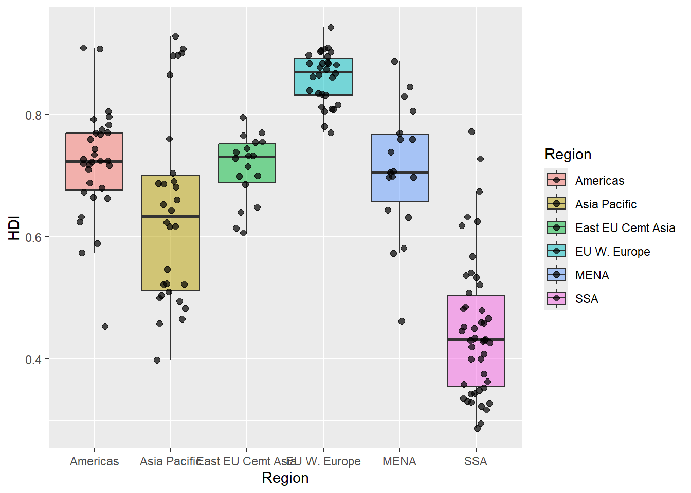
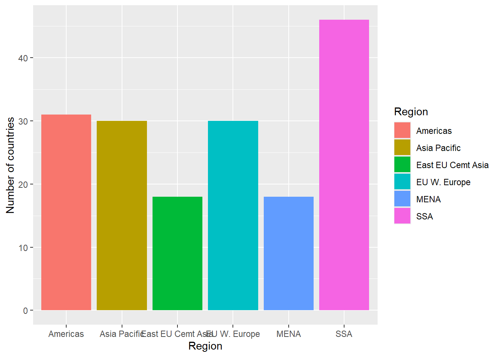

New names:
Rows: 173 Columns: 6
── Column specification
──────────────────────────────────────────────────────── Delimiter: "," chr
(2): Country, Region dbl (4): ...1, HDI.Rank, HDI, CPI
ℹ Use `spec()` to retrieve the full column specification for this data. ℹ
Specify the column types or set `show_col_types = FALSE` to quiet this message.
• `` -> `...1`
1.1 Show the first few rows of economist_data.
head(economist_data) |>kable()
…1
Country
HDI.Rank
HDI
CPI
Region
1
Afghanistan
172
0.398
1.5
Asia Pacific
2
Albania
70
0.739
3.1
East EU Cemt Asia
3
Algeria
96
0.698
2.9
MENA
4
Angola
148
0.486
2.0
SSA
5
Argentina
45
0.797
3.0
Americas
6
Armenia
86
0.716
2.6
East EU Cemt Asia
1.2 Expore the relationship between human development index (HDI) and corruption perception index (CPI) with a scatter plot as the following.
1.11 Show the distribution of HDI in each region using a box plot. Set the transparency of these boxes to 0.5 and do not show outlier points with the box plot. Instead, show all data points for each country in the same plot. (Hint: geom_jitter() or position_jitter() might be useful.)
economist_data |>ggplot(aes(x = Region, y = HDI, fill = Region)) +geom_boxplot(alpha =0.5, outlier.shape =NA) +geom_jitter(width =0.2, size =2, alpha =0.7)

1.12 Show the count of countries in each region using a bar plot.
economist_data |>ggplot(aes(x = Region, fill = Region)) +geom_bar() +labs(y ="Number of countries", x ="Region")

1.13 You have now created a variety of different plots of the same dataset. Which of your plots do you think are the most informative? Describe briefly the major trends that you see in the data.
Answer: Write your response here.
Exercise 2. Theophylline experiment
This exercise uses the Theoph data frame (comes with your R installation), which has 132 rows and 5 columns of data from an experiment on the pharmacokinetics of the anti-asthmatic drug theophylline. Twelve subjects were given oral doses of theophylline then serum concentrations were measured at 11 time points over the next 25 hours. You can learn more about this dataset by running ?Theoph
Have a look at the data structure
kable(head(Theoph))
Subject
Wt
Dose
Time
conc
1
79.6
4.02
0.00
0.74
1
79.6
4.02
0.25
2.84
1
79.6
4.02
0.57
6.57
1
79.6
4.02
1.12
10.50
1
79.6
4.02
2.02
9.66
1
79.6
4.02
3.82
8.58
For the following exercise, transform the data as instructed. Try to use tidyverse functions even if you are more comfortable with base-R solutions. Show the first 6 lines of the transformed data in a table through RMarkdown using the kable() function, as shown above.
2.1 Select columns that contain a lower case “t” in the Theoph dataset. Do not manually list all the columns to include.
## Write your code here
2.2 Rename the Wt column to Weight and conc column to Concentration in the Theoph dataset.
## Write your code here
2.3 Extract the Dose greater than 4.5 and Time greater than the mean Time.
## Write your code here
2.4 Sort the Theoph dataset by Wt from smallest to largest and secondarily by Time from largest to smallest.
## Write your code here
2.5 Create a new column called Quantity that equals to Wt x Dose in the Theoph dataset. This will tell you the absolute quantity of drug administered to the subject (in mg). Replace the Dose variable with Quantity.
## Write your code here
2.6 Find the mean conc and sum of the Dose received by each test subject.
Show data for the 6 subjects with the smallest sum of Dose as below. Do not define new intermediate objects for this exercise; use pipes to chain together functions.